Guardio · Claude Code למעצבים · חלק 2: תהליך העבודה
עמוד ה-To-dos: מאפיון לשלושה קונספטים
היום "To do" בכותרת של Guardio לא מוביל לשום מקום, ו-Home מראה 3 מתוך 56 בעיות אבטחה. כך זה הפך לעמוד: spec, מחקר מתחרים, ושלושה קונספטים שעובדים, בדסקטופ ובמובייל.
פרק 1 · PM
/guardio-pm
שאלות הבהרה, נקודת מבט, spec וכרטיס ב-Notion
←
פרק 2 · מחקר
/guardio-design-research
15 רפרנסים מ-Mobbin, agent שמנתח אותם, פסיקה ושלושה כיוונים
←
פרק 3 · עיצוב
/senior-product-designer
שלושה קונספטים באפליקציה, ואז במובייל כ-HTML
25.11.2026 · המקשים 1, 2, 3 קופצים לפרק · N מציג הערות דובר
זה החלק השני של המצגת: התהליך עצמו. בחלק הראשון בנינו את ה-skills, וכאן מריצים אותם על פיצ'ר אמיתי אחד, עמוד ה-To-dos באפליקציית הדסקטופ.
שני skills נבנו לפרויקט: guardio-pm ו-guardio-design-research (עם ה-agent שנקרא competitive-analyst). בשלב העיצוב לא נבנה skill חדש: השתמשנו ב-senior-product-designer הקיים של דניאל, שכבר עושה את מה שהשלב הזה צריך.
כל מה שמופיע כאן לקוח מהתיעוד בתיקייה process/: הפרומפטים, השאלות, התשובות, ההחלטות, וגם מה שלא עבד.
01
פרק 1 · guardio-pm
PM: מה בונים, ולמה
ה-skill קורא את הקוד ואת הלוח לפני שהוא שואל, שואל לפני שהוא כותב, לוקח עמדה, וכותב spec שאפשר להחליט עליו.
הבעיה הפרומפט ארבע שאלות נקודת המבט ה-spec Notion
פרק ראשון: ה-PM. לפני פיקסל אחד, מגדירים מה הבעיה, למי, מה ההנחה המסוכנת, ומה בפנים ומה בחוץ. התוצר הוא spec מאושר וכרטיס ב-Notion.
פרק 1 · הבעיה · מה ה-PM מצא לפני ששאל משהו
Home מראה 3 מתוך 56 בעיות, ו-"To do" מוביל חזרה ל-Home.
Home מציג 3 שורות מתוך 56, בלי סדר שרואים.
"View To-dos" ו-"To do" בכותרת מובילים חזרה ל-Home. העמוד שהמוצר מפנה אליו לא קיים.שלוש בעיות משלושה סוגים: סיסמה שדלפה (חשבון), ביומטריה כבויה ואפליקציה לא מעודכנת (מכשירים). אותו משקל, ונקודה אדומה אחת.
"Oct 16, 2015" בשורה של Dropbox הוא תאריך הדליפה, לא התאריך שבו Guardio מצא אותה.במובייל כרטיס "Pending To-Dos" אומר 2. בדסקטופ: 56.
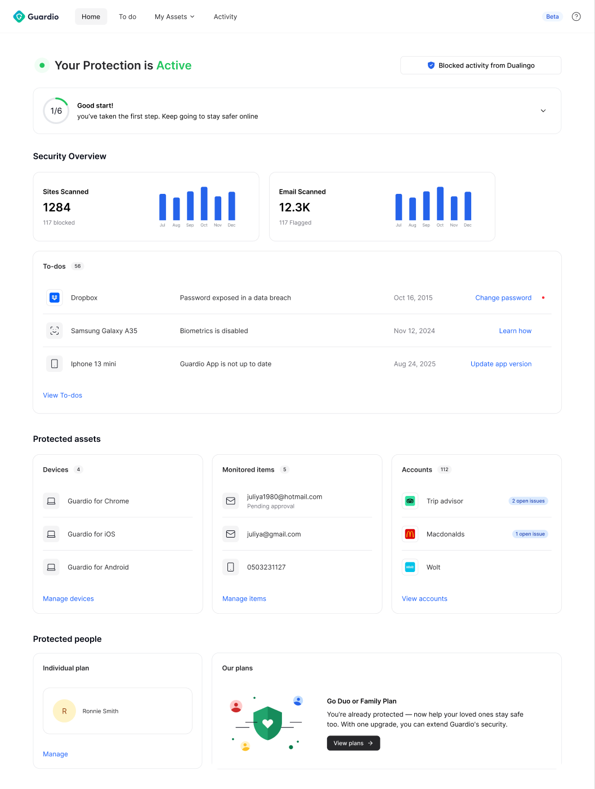
Home היום, מתוך Figma: כרטיס ה-To-dos עם 3 שורות והמספר 56
זה הגראונדינג של ה-skill. לפני שאלה אחת הוא קרא את Home.tsx, את הנתונים ב-packages/data/src/home.ts, את כרטיסי ה-Home במובייל ואת צילום ה-Figma.
מה שמצא: 3 מתוך 56, שני קישורים שמובילים חזרה ל-Home, ושלוש בעיות משלושה סוגים באותו משקל. רוב התיקונים קורים מחוץ ל-Guardio.
התאריך מבלבל: Oct 16, 2015 הוא תאריך הדליפה של Dropbox. ייתכן שהמשתמש כבר החליף את הסיסמה, ואין לו איך להגיד את זה.
עוד דברים שמצא: התקדמות ה-setup (1/6) היא רשימה נפרדת מה-to-dos. בכרטיס Accounts כתוב "2 open issues" על Tripadvisor, ואין איפה לראות אותן. ובמובייל יש לשונית To do's עם נקודה, שמובילה למסך placeholder.
פרק 1 · הפרומפט
דניאל כתב שורה אחת. ה-skill קרא את הקוד לפני ששאל.
דניאל כתב: /guardio-pm i want to buld the "to do" page and i need youre help with this and to understand how the cometitors are doing that and what will be the best way to do it all the context you will bring it after i will see to bring it the research
לפני השאלות, ה-skill בדק:
לוח ה-Notion
חיפש "to-dos page" . אין עדיין כרטיס.
הקוד של Home
Home.tsxpackages/data/src/home.ts
Home במובייל
כרטיסי ה-Home באפליקציית המובייל
Figma
הצילום home_desktop.png
מה שמצא שם קבע את השאלות.
דניאל הריץ קודם /reload-skills, ואז כתב את השורה הזאת, כולל שגיאות ההקלדה. אין פה תבנית ואין פרומפט מהונדס: ה-skill יודע מה לבדוק בעצמו.
החיפוש ב-Notion הראה שאין עדיין כרטיס לעמוד. כל השאר הוא קריאה של הקוד ושל צילום ה-Figma, והממצאים מהשקף הקודם הם בדיוק מה שהוביל לשאלות בשקף הבא.
פרק 1 · ארבע שאלות הבהרה, יחד, בעברית
ה-PM שאל ארבע שאלות לפני שכתב מילה. דניאל בחר בהמלצה בכולן.
1 · Home מראה 3 מתוך 56, ו-"To do" חוזר ל-Home. מה הבעיה המרכזית שהעמוד פותר?
מה באמת חשוב: 56 זה הרבה, אנשים לא יודעים מאיפה להתחיל, אז לא מתחילים כלום.
הוצעו גם: לסגור כמה שיותר · להרגיש מוגן
2 · צעדי ה-setup הם רשימה נפרדת. איך הם קשורים לעמוד?
נפרד: to-dos הם בעיות ש-Guardio מצא. ה-setup נשאר בכרטיס שלו ב-Home.
הוצעו גם: רשימה אחת · setup קודם, ב-Onboarding
3 · רוב התיקונים קורים מחוץ ל-Guardio. מתי בעיה נחשבת סגורה?
בדיקה אוטומטית איפה שאפשר. כשאי אפשר, המשתמש מאשר.
הוצעו גם: המשתמש תמיד מסמן · גם "not relevant to me"
4 · כמה גדולה גרסה 1?
רשימה ותיקון של בעיה אחת: רשימה מתועדפת עם פילטרים, ומה קורה כשפותחים בעיה.
הוצעו גם: רשימה בלבד · הכול
הניסוח כאן מתורגם מהתיעוד. השאלות נשאלו בעברית, ארבע ביחד. לכל שאלה ה-skill הציע אפשרויות וסימן אחת כמומלצת, ובכל הארבע דניאל בחר במומלצת.
שימו לב שכל שאלה נולדה ממשהו שה-skill מצא בקוד: 3 מתוך 56, ה-setup כרשימה נפרדת, תיקונים שקורים מחוץ למוצר.
ושימו לב לשאלה 3: האפשרות "not relevant to me" הוצעה ולא נבחרה. נחזור אליה עוד שני שקפים.
פרק 1 · נקודת המבט
אנשים מטפלים בבעיות כשהמוצר קובע את הסדר ומסביר כל אחת בשורה אחת.
המשתמש העיקרי
Activated (D10+)
ההגנה מוגדרת וסורקת, ולכן שם הבעיות מצטברות.
"Tell me what actually needs me, help me deal with it, and let me get on with my day."
ההשערה
רשימה לפי תאריך מובילה לכך שאף בעיה לא מתוקנת
לכן העמוד מוביל עם מה שחשוב עכשיו: סט קצר ומדורג, תיקון ראשון ברור, והשאר מחכה בלי רגשות אשמה.
ההנחה המסוכנת ביותר
שאנשים יסכימו עם הדירוג של המוצר
היום יש בנתונים רק דגל urgent. דירוג שמרגיש שגוי שובר אמון.
לכן כל קונספט חייב להראות למה פריט מופיע ראשון.
נקודת המבט, במילים של ה-PM: אנשים פועלים על בעיות אבטחה כשהמוצר מחליט בשבילם על הסדר ומסביר כל אחת בשורה פשוטה אחת. רשימה מלאה לפי תאריך מובילה לכך שאף אחת לא מתוקנת.
המשתמש העיקרי הוא Activated, כי שם הבעיות מצטברות. Onboarding ו-At risk מכוסים כמצבים, ו-Nothing installed מקבל מצב ריק כן, אף פעם לא "all clear".
ההנחה המסוכנת: שאנשים יקבלו את הדירוג. בנתונים יש היום רק דגל urgent. מכאן הדרישה מכל קונספט להראות למה פריט ראשון, ואנחנו נראה אותה חוזרת בשלושת הקונספטים.
פרק 1 · ה-spec · docs/specs/todos-page.md · Approved
ה-spec: עמוד אחד, רשימה מדורגת, ותיקון אחד מקצה לקצה.
בפנים · גרסה 1
עמוד ב-#/todos, מהכותרת ומ-Home
דירוג לפי עדיפות, עם הסיבה גלויה
פילטרים לפי סוג נכס, עם מספר לכל אחד
פתיחת בעיה: למה, מה קורה אם לא, צעדים, ופעולה
Guardio בודק לבד איפה שאפשר. אחרת המשתמש מאשר
בחוץ
ציון אבטחה
היסטוריה מלאה של תיקונים
התראות ומיילים
to-dos של בני משפחה
"Fix all" ותיקון אוטומטי
ארבעה מצבי משתמש
Activated: העמוד המלאOnboarding: מה שנמצא עד עכשיו, ושעוד בדיקות ירוצו כשה-setup יסתייםAt risk: באנר מעל הרשימה: ההגנה מושהית, לעדכן תשלוםNothing installed: מצב ריק שמסביר למה. אף פעם לא "all clear"
מדדי הצלחה, כהשערות
משתמש Activated יודע מה לתקן ראשון, ומתחיל, תוך 10 שניות
יותר ביקורים נגמרים בבעיה אחת לפחות שנסגרה
מספר הבעיות הפתוחות יורד לאורך זמן
אין analytics ב-repo, אז לכל השערה כתוב איך תימדד בפרודקשן.
ה-PRD, ה-brief, כיוון המחקר וה-handoff למעצב יושבים באותו קובץ. מדדי ההצלחה כתובים כהשערות, ולכל אחת כתוב איך תימדד, כי אין analytics ב-repo.
ה-PM גם הוסיף שדות נתונים שהעמוד צריך ושאין ב-Todo של היום: priority, category, status, verify, why, steps, detectedAt. השדה detectedAt מפריד בין "מתי Guardio מצא" לבין תאריך הדליפה שמבלבל בשורות של היום.
שתי החלטות נשארו פתוחות בכוונה: איך לקבץ את הרשימה (שאלה למחקר), ואיפה קורה התיקון (ציר טוב לשלושה קונספטים).
הוא גם קרא לתופעות מסדר שני בשם: סדר הכרטיס ב-Home, תגי ה-open issues ב-Accounts, המספר במובייל (2 מול 56), והפריט Home שתמיד מסומן בכותרת. העמוד הופך ארבעה מבואות סתומים לקישורים, ולכן כולם צריכים להסכים על המספרים ועל הסדר.
הקובץ היום כבר כולל את העדכונים שבאו מהמחקר. כאן מוצג מה שה-PM הגדיר.
פרק 1 · סקירה אחת, ואז Notion
ה-PM חרג מהתשובות של דניאל במקום אחד, ו-Claude אמר את זה בסקירה.
החריגה
"Not relevant to me" נשאר בגרסה 1
בשאלה 3 זו הייתה אפשרות נפרדת, ודניאל לא בחר בה. ה-PM השאיר אותה למקרה אחד: חשבון שהמשתמש סגר. בלעדיה, הבעיות של חשבון כזה לא יכולות לצאת מהרשימה.
בסקירה Claude הצביע על זה והציע להוריד. דניאל אישר את ה-spec כמו שהוא: "Approve" .
כרטיס ב-Notion, רק אחרי האישור
"To-dos page" בלוח Guardio · Product Specs
Stage Shaping Area To-dos Platform Desktop, Mobile User states Onboarding, Activated, At risk Priority High
פתח ב-Notion ↗
סבב סקירה אחד, כמו שה-skill מגדיר: ה-brief, ההחלטות המרכזיות ושדות הכרטיס הוצגו בצ'אט. Claude הצביע בעצמו על המקום היחיד שבו ה-PM הלך מעבר לתשובות של דניאל, והציע להוריד אותו. דניאל אישר כמו שזה.
זה מה שאנחנו רוצים מ-skill של PM: שייקח עמדה, וגם יגיד בגלוי איפה העמדה שלו חורגת ממה שביקשו ממנו.
כרטיס ה-Notion נוצר רק אחרי האישור. אחרי המחקר נוסף לו סעיף "Research verdict", וה-Stage עבר מ-Shaping ל-Design.
02
פרק 2 · guardio-design-research + competitive-analyst
מחקר: איך אחרים עושים את זה
רפרנסים אמיתיים מ-Mobbin, agent נפרד שמנתח אותם מול ההשערה של ה-PM, ופסיקה עם שלושה כיוונים.
החיפושים ה-agent דפוסים מה לא לעשות הפסיקה שלושה כיוונים
פרק שני: המחקר. הקלט הוא כיוון המחקר שה-PM כתב ב-spec: השערה לבדוק וארבע שאלות, לא רשימת מילות מפתח.
פרק 2 · ה-scope והחיפושים ב-Mobbin
שמונה חיפושים, כ-48 תוצאות. 15 רפרנסים נשארו.
דניאל כתב: תפעיל את שלב 5 בבקשה
Claude הריץ /guardio-design-research על כיוון המחקר שב-spec.
1 · web password manager security dashboard with breached and weak passwords NordVPN, Proton, Surfshark, Vanta
2 · web account security checkup with recommended actions Uber, Coinbase, Google Ads
3 · web identity theft protection app dashboard with data breach alerts אין חדש: חופף ל-1
4 · web · flows security checkup flow with step by step recommendations Base44, Uber
5 · web empty state when all tasks are done Docusign, Gusto
6 · web task list grouped by priority with high priority items first Unify
7 · iOS password manager security recommendations list Coinbase, Chime, Amazon
8 · iOS data breach alert detail with steps to secure account NordVPN
ישירים · אבטחה ופרטיות לצרכן: Surfshark · NordVPN · Proton Pass
עקיפים · אבטחת חשבון במוצרים אחרים: Vanta · Google Ads · Uber · Coinbase · Base44 · Chime · Amazon
שאיפה · כלי משימות: Docusign · Gusto · Unify
מה אין ב-Mobbin: חבילות אבטחה לצרכן (אנטי-וירוס, Aura, Norton). הסט הישיר הוא מותגי VPN ופרטיות.
דניאל כתב רק "תפעיל את שלב 5 בבקשה". ה-skill אמור קודם לאשר את ה-scope מול המשתמש; דניאל כבר אמר להריץ, אז Claude הציג את ה-scope והמשיך.
שמונה חיפושים ב-Mobbin, עם intent אחד לכל הריצה. נשמר רק מה שעונה על אחת מארבע השאלות: 15 מתוך כ-48 תוצאות, 11 ל-web (שניים מהם flows) ו-4 ל-iOS, 18 תמונות בסך הכול. רשימות אנטרפרייז (Snowflake, Jira, 15Five) ודפי הגדרות בלי משימה (Dropbox, Telegram, Intercom) נזרקו.
ל-Mobbin אין חבילות אבטחה לצרכן. שתי זוויות סגרו את הפער: אבטחת חשבון בתוך מוצרים אחרים, וכלי משימות.
כל תוצאה הגיעה עם הודעה מ-Mobbin על שימוש גבוה ב-AI החודש (הקרדיטים עלו מ-725 ל-750 במהלך הריצה), וההודעה הוצגה לדניאל מילה במילה, כמו שה-skill דורש.
כל 15 הרפרנסים נשמרו גם לאוסף פרטי ב-Mobbin, עם הערה על כל אחד: למה הוא שם ואיזה כיוון הוא מזין.
פרק 2 · competitive-analyst , agent נפרד
ה-agent קיבל שאלות ותמונות, ואת ההשערה אחרונה. הוא חזר נגד אחת ההנחות של ה-PM.
שאלה 1 איך עוזרים לבחור את הבעיה הראשונה?
שאלה 2 איך מדריכים תיקון שקורה מחוץ למוצר, ואיך יודעים שנגמר?
שאלה 3 איך מקבצים: לפי חומרה, לפי נכס, או לפי סוג תיקון?
שאלה 4 איך מראים התקדמות ו"אין יותר", בלי להבהיל ובלי הרגעת שווא?
1 · Claude אוסף 15 רפרנסים, 18 תמונות, שמורות ב-refs/
←
2 · ה-agent מקבל השאלות, התמונות ומפת ה-repo. ההשערה של ה-PM אחרונה. בלי הרשמים של Claude, בלי השיחה.
←
3 · ה-agent מחזיר מטריצה, 11 דפוסים, פסיקה ושלושה כיוונים. ונגד הנחה 2: מוצרי אבטחה מקבצים לפי סוג תיקון, לא לפי עדיפות.
←
4 · Claude בודק מול התמונות. שני תיקונים קטנים: 112 accounts (לא monitored ), והנקודות של NordVPN ירוקות ואדומות.
זה הכלל של ה-skill: ה-agent מנתח, הוא לא מחפש. הוא קיבל את ארבע השאלות ואת התמונות, את ההשערה של ה-PM בסוף, ואף אחד מהרשמים של Claude. הוא לא ראה את השיחה.
הסימן לכך שזה עבד: הוא חזר נגד אחת ההנחות של ה-PM, שקיבוץ לפי עדיפות עדיף. agent שמקבל את ההשערה מראש נוטה לאשר אותה.
לפני שהשתמשו בניתוח, Claude בדק אותו מול התמונות: Home מציג 112 accounts, לא 112 monitored accounts (יש 5 monitored items), והנקודות על הלשוניות ב-NordVPN iOS ירוקות ואדומות, לא רק אדומות. כל השאר תאם. ה-agent פתח את כל 18 התמונות, והניתוח המלא נשמר ליד דק המחקר.
פרק 2 · דפוס · רשימה מסודרת, הפריט הראשון פתוח
מי שעושה את התיקון הראשון ברור, קובע את הסדר בעצמו ופותח את הפריט הראשון.
Uber פותח את "Phone number" עם "Add" . השאר מחכים סגורים.
Google Ads משאיר את המשימה שהושלמה, עם וי, למטה.
בכל הדוגמאות יש 2–5 פריטים. אף אחת לא מראה את זה ב-56.
אף אחד לא אומר למה פריט ראשון.
זה הדפוס שהכי תומך בהשערה של ה-PM: בכל רפרנס שבו ברור מאיפה מתחילים, המוצר בחר את הסדר. Uber פותח את הפריט הראשון, Coinbase iOS שם את הפריט הפתוח למעלה, Chime ו-Amazon ממספרים את הצעדים.
אבל שתי מגבלות: כל הרשימות האלה קצרות, 2 עד 5 פריטים, ואף אחד לא מסביר למה פריט ראשון. בדיוק שני הדברים שהעמוד שלנו צריך.
ההתאמה ל-Guardio לפי ה-agent: CollapsibleCard עם defaultOpen בגרסה קומפקטית, ושורה עם מצב done.
פרק 2 · דפוס · מקובץ לפי סוג תיקון
מוצרי אבטחה עם הרבה בעיות מקבצים לפי מה שצריך לעשות, לא לפי עדיפות.
NordVPN Exposed / Weak / Reused
Proton Weak / Reused / Inactive 2FA / Excluded
סט הוראות אחד משרת הרבה פריטים, ולכן זה גדל בקלות.
אבל זה לא בוחר פריט ראשון, וקבוצות ריקות עדיין תופסות מקום.
זה הממצא שהלך נגד ההנחה של ה-PM. קיבוץ לפי עדיפות הופיע רק כהגדרה שהמשתמש בוחר בכלי משימות כללי (Unify). מוצרי האבטחה, NordVPN, Proton ו-Vanta, מקבצים לפי סוג תיקון, וב-Vanta הנכסים בתוך הקבוצה.
התשובה לשאלה 3: לסדר לפי עדיפות, לקבץ לפי סוג תיקון, והנכס הוא השורה. קיבוץ לפי נכס כבר קיים ב-Home (Protected assets ותגי ה-open issues).
שימו לב גם ל-Proton: "Excluded items" עם "These items remain at risk". זה המקור ל-Later שאומר את הסיכון.
פרק 2 · מה לא לעשות · חומרה על רשימה לא ממוינת, ואזעקה אדומה
הרשימה הארוכה היחידה בסט היא גם הכי דומה ל-Home של היום, והיא לא נותנת מאיפה להתחיל.
מה לשים לב
Surfshark: High, Low, High, High… הסדר מערבב חומרות, והבעיה היא רק "Breach" .
העצה: לפנות לארגון מקומי נגד גניבת זהות. בלי קישור.
NordVPN iOS: "You are at risk" על דליפה אחת. הכפתור היחיד טוב, האזעקה לא.
ב-Guardio אדום שייך ל-At risk. to-dos אדומים יטשטשו בין השניים.
Surfshark קיבל את הציונים הנמוכים ביותר בניתוח: אין סדר, תוויות חומרה שמערבבות High ו-Low, הבעיה מתוארת במילה אחת, והעצה היא לפנות לארגון מקומי נגד גניבת זהות, בלי קישור ובלי דרך לסמן שזה טופל.
הוא חשוב כי הוא הכי קרוב ל-Home של היום: רשימה ארוכה, שורות באותו משקל, נקודה אדומה.
NordVPN iOS מראה את הצד השני: כפתור יחיד "Review and resolve" זה טוב, אבל "You are at risk" באדום על דליפה אחת זה אזעקה. ב-Guardio ההירו האדום שייך למצב At risk, כשתשלום נכשל.
פרק 2 · הפסיקה על ההשערה של ה-PM
ההשערה מחזיקה, עם שינויים.
"People act on security issues when the product decides the order for them and explains each one in one plain line."
הראיות
בעד: בכל רפרנס שבו התיקון הראשון ברור, המוצר בחר את הסדר (Uber, Coinbase iOS, Chime, Amazon).נגד הנחה 2: מוצרי אבטחה מקבצים לפי סוג תיקון (NordVPN, Proton, Vanta), לא לפי עדיפות.לא הוכח: אף אחד לא חותך סט קצר מתוך 56, ואף אחד לא מסביר את הסדר.
חמשת השינויים
היחידה היא סוג תיקון: "Change 6 exposed passwords" , עם הנכסים בפנים.
כל פריט אומר איך יודעים שהוא נגמר: Guardio בודק שוב, או שהמשתמש מאשר.
"השאר מחכה" הוא מקום גלוי עם שם (Later), שעדיין אומר את הסיכון.
בלי אדום ל-to-dos. אדום שייך ל-At risk, ושם התשלום קודם לכל.
המצב הריק תלוי במצב המשתמש.
בעד: בכל רפרנס שבו התיקון הראשון ברור, המוצר בחר את הסדר. Surfshark, הרשימה הארוכה הלא ממוינת היחידה, לא נותן נקודת התחלה.
נגד הנחה 2: קיבוץ לפי סוג תיקון, לא לפי עדיפות.
לא הוכח: כל רפרנס מדורג הוא 2–5 פריטים, ורק Vanta נותן סיבה לסדר (תאריך יעד). אלה נשארים הדברים העיקריים לבדוק, וה-agent ממליץ לבדוק קודם את שורת "למה ראשון".
דניאל בחר בשני הצעדים שהוצעו: "Yes, update spec and go to design." ה-spec עודכן עם הפסיקה וחמשת השינויים, שאלת הקיבוץ נסגרה, ונוספו שדות נתונים (kind, link, ומצבי checking ו-later). כרטיס ה-Notion עבר מ-Shaping ל-Design.
פרק 2 · שלושה כיוונים
שלושת הכיוונים נבדלים במה שהמשתמש עושה: פריט אחד, סט קצר, או קבוצה.
A · Next up
תיקון אחד בכל פעם
כרטיס אחד ש-Guardio בחר, עם למה הוא ראשון. מתקנים, והבא מגיע.
מתאים ל: מי שלא תיקן אף פעם, Onboarding, At risk
סיכון: מסתיר את ההיקף. "See all" הופך לעמוד האמיתי.
השראה: Uber, NordVPN iOS, Coinbase, Amazon
B · Top three, the rest can wait
שלוש עכשיו, השאר מחכה
שלושה כרטיסים מדורגים עם סיבות, הראשון פתוח. השאר למטה, מקובץ לפי סוג, ומקום Later.
מתאים ל: משתמשי Activated שחוזרים כל שבוע
סיכון: החיתוך בשלוש צריך כלל שאנשים סומכים עליו.
השראה: Google Ads, Uber, Coinbase iOS, Proton, Vanta
C · Fix by kind
סוג אחד בכל פעם
היחידה היא קבוצה: "Change 6 exposed passwords" . הוראות פעם אחת, רשימת אתרים, "2 of 6" .
מתאים ל: backlog גדול מסוג אחד
סיכון: בעיה קריטית אחת נקברת בתוך קבוצה.
השראה: Vanta, Proton, NordVPN
נדחה: עמוד לפי נכס. הוא הכי חלש בראיות (רק Surfshark), ו-Home כבר מכסה אותו.
מה שמשתנה בין הכיוונים הוא חלוקת העבודה בין המוצר למשתמש. בפריט אחד המוצר מחליט הכול. בסט קצר המוצר בוחר את הראשונים והמשתמש מדפדף בשאר. בקבוצה המוצר מסדר את הקבוצות והמשתמש עובר על אחת.
כל כיוון בא עם הסיכון שלו, ובפרק הבא נראה איך כל קונספט עונה על הסיכון שלו.
הכיוון שנדחה: עמוד לפי נכס ("פתח את Dropbox, ראה את הבעיות שלו"). הוא הכי חלש בראיות, ו-Home כבר מכסה אותו עם כרטיסי Protected assets ותגי ה-open issues.
03
פרק 3 · senior-product-designer
עיצוב: שלושה קונספטים שעובדים
קודם הקשר המוצר, אחר כך החלטה על כל אלמנט, ורק אז קוד. שלושה קונספטים באפליקציה, ואז במובייל כ-HTML.
השיטה B A C מצבים מובייל השפעה על מערכת העיצוב
פרק שלישי: העיצוב. כאן לא בנינו skill חדש; השתמשנו ב-senior-product-designer הקיים של דניאל. ה-handoff שה-PM כתב מיועד להדבקה ישירה אליו, יחד עם הפסיקה ושלושת הכיוונים.
פרק 3 · השיטה · שלוש שכבות
לפני שורת קוד: הקשר המוצר, והחלטה על כל אלמנט.
שכבה 1 · הקשר
apps/web/DESIGN_CONTEXT.md
לא היה קובץ כזה, אז ה-skill סרק את הקוד וכתב אחד. מפה של המוצר: רק מצביעים, בלי ערכים מועתקים.
Guardio web · DS=PARTIAL · web desktop 1440 · English LTR · WCAG AA · gaps: no empty/loading/error patterns, no motion tokens
ובו do-not-ship tripwires, למשל: אדום ל-to-dos. אדום שייך ל-At risk.
שכבה 2 · השער, בקונספט B
REUSE Card, CardHeader + CountBadge, IconTile, SectionTitle, Tabs, Button COMPOSE שורה מדורגת, שורת קבוצה, הודעות, מצבי ריק / טעינה / שגיאה EXTEND StatusBadge + fixed / checking / later · TextLink + href / onClick / size · Header + active INVENT StepList : צעדים ממוספרים. סומן ב-spec המאושר, ומוצע חזרה למערכת.PLACEHOLDER אין. כל אייקון הוא asset קיים.
שכבה 3 · ביצוע: מצבים, זרימה, נגישות וטקסטים, מול ה-checklists של ה-skill.
שכבה 1: הקשר המוצר. לא היה DESIGN_CONTEXT.md, אז ה-skill סרק את הקוד וכתב אחד. יש בו מצביעים לקבצים, לא ערכים מועתקים, כך שהוא לא מתיישן כשטוקן משתנה.
שכבה 2: השער. כל אלמנט מתויג לפני שנכתב קוד: REUSE, COMPOSE, EXTEND, INVENT או PLACEHOLDER. אין המצאה שקטה.
שכבה 3: ביצוע. מצבים, זרימה, נגישות וטקסטים נבדקו מול ה-checklists של ה-skill. ה-skills המשניים (ui-ux-pro-max, frontend-design, interaction-*) היו זמינים ולא נקראו, כדי שהריצה תישאר קלה.
לפני הבנייה, שתי שאלות: איזה כיוון הוא קונספט 1? דניאל בחר ב-B, ההמלצה. ואיך שלושת הקונספטים יחיו? עמוד אחד עם מתג A/B/C, כל אחד בכתובת משלו: #/todos/a, #/todos/b, #/todos/c.
פרק 3 · קונספט B · Top three, the rest can wait · #/todos/b
B: שלוש בעיות, כל אחת עם "למה ראשונה". השאר מחכה, מקובץ לפי סוג.
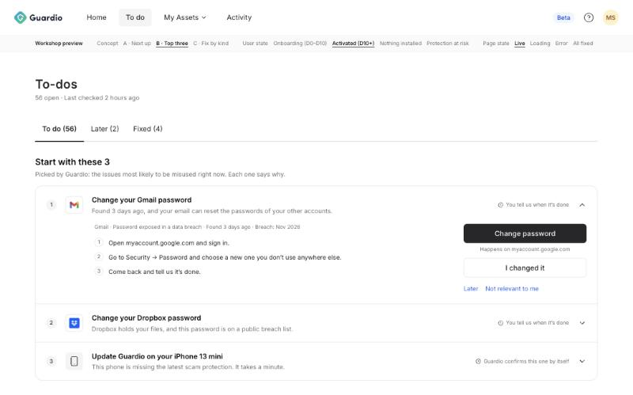
"Start with these 3" : הראשונה פתוחה, עם צעדים ממוספרים ואיך יודעים שזה נגמר
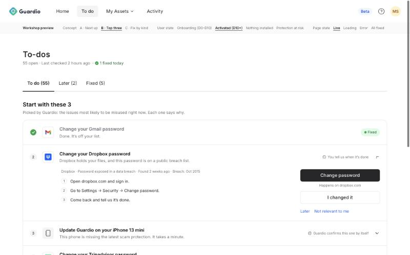
אחרי תיקון: Gmail נשאר במקום עם וי, Dropbox נפתח לבד, ו-"1 fixed today"
Everything else (53) : מקובץ לפי סוג תיקון, 31 סיסמאות חשופות, 19 אימות דו-שלבי ועוד שלוש. טאבים: To do / Later / Fixed .
הפריט הראשון פתוח: פרטים, צעדים ממוספרים, הפעולה הראשית, "I changed it", "Later" ו-"Not relevant to me". כל פריט אומר איך יודעים שהוא נגמר: "You tell us when it's done" או "Guardio confirms this one by itself".
אחרי תיקון: הפריט נשאר במקום עם וי ו-Fixed, הבא נפתח לבד, פריט חדש עולה לשלושה, המספרים מתעדכנים ו-"1 fixed today" מופיע. תיקונים ש-Guardio יכול לאמת מקבלים Checking. זה רגע ההנאה של העמוד: מומנטום אחרי תיקון, לא קישוט.
כל קבוצה ב-Everything else נפתחת ל-"How to fix" פעם אחת, אחר כך האתרים, ואז "And 27 more like these".
שתי החלטות שבאו מהבנייה הראשונה: המספרים 1–3 מתחילים מחדש על הפריטים הפתוחים (בבנייה הראשונה המספור היה לפי מיקום, 1 עד 5 אחרי שני תיקונים, וזה שבר את "Start with these 3"). והכפתור הראשי אומר רק את הפעולה, עם "Happens on dropbox.com" מתחתיו (בבנייה הראשונה שם האתר היה בכפתור והוא נשבר לשתי שורות).
דניאל אישר את B כמו שנבנה. ה-To do בכותרת וה-View To-dos ב-Home מובילים עכשיו לכאן.
פרק 3 · קונספט A · Next up · #/todos/a
A: כרטיס אחד ש-Guardio בחר, ורגע של "Done" לפני הבא בתור.
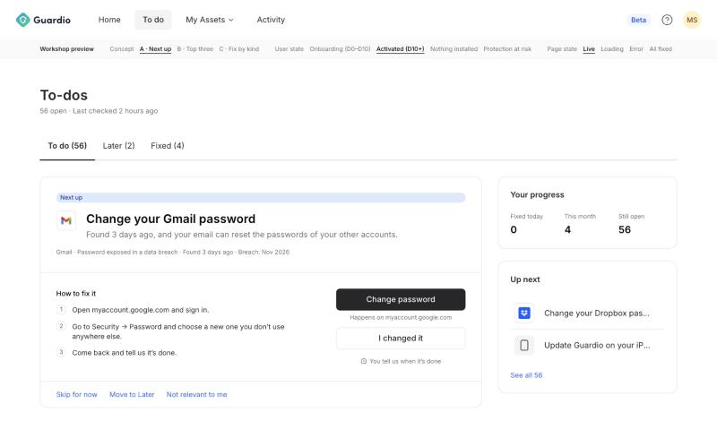
הכרטיס: למה הוא ראשון ואיך לתקן. בצד: התקדמות במספרים, ו-"See all 56" כדי לא להסתיר את ההיקף
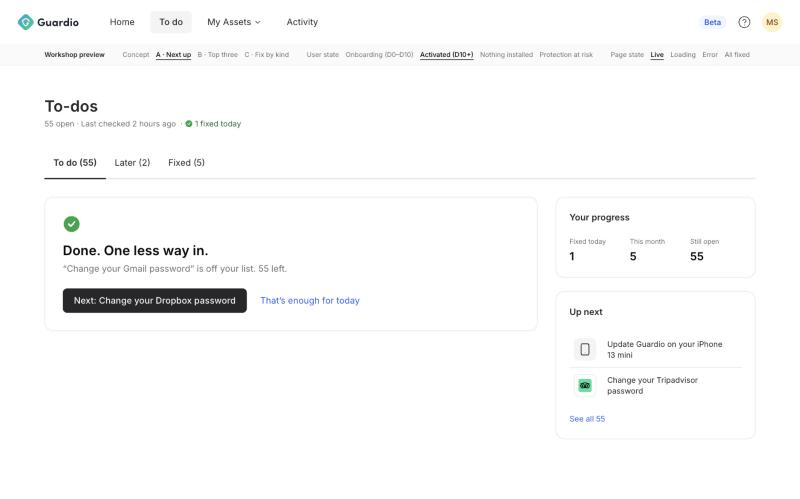
"Done. One less way in." ואז הבא, או "That's enough for today"
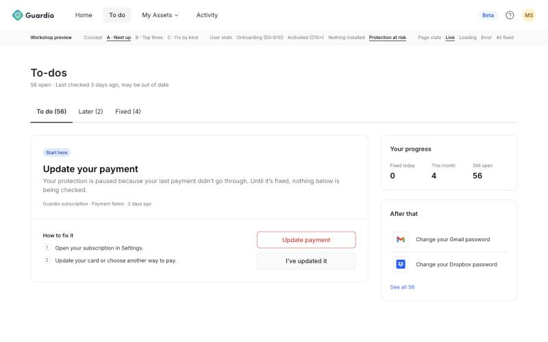
At risk: תיקון התשלום הוא הכרטיס
דניאל כתב "Start step 7". הפעם ה-skill טען את ה-DESIGN_CONTEXT משלב 6 ולא סרק מחדש. לפי כלל הסשן של ה-skill, כל מה שאושר בשלב 6 נחשב עכשיו REUSE.
רגע ה-Done מחכה ללחיצה ולא מתחלף לבד: ב-A יש כרטיס אחד בכל פעם, אז הרגע שבו תיקנת משהו הוא הפרס. "That's enough for today" נותן מקום כן לעצור. כש-Guardio מאשר לבד, הרגע אומר "Nice. Guardio is checking it."
בצד: Your progress כמספרים (fixed today, this month, still open, בלי אחוזים, לפי המחקר), Up next עם שני הבאים, ו-See all 56 שפותח את הרשימה המלאה מקובצת לפי סוג.
At risk: המחקר אמר שבמצב הזה התשלום קודם לכל to-do. ב-A הכרטיס הוא העדיפות, אז תיקון התשלום הוא הכרטיס: "Until it's fixed, nothing below is being checked".
פרק 3 · קונספט C · Fix by kind · #/todos/c
C: סוג אחד בכל פעם. הוראות פעם אחת, ואז רשימת אתרים.
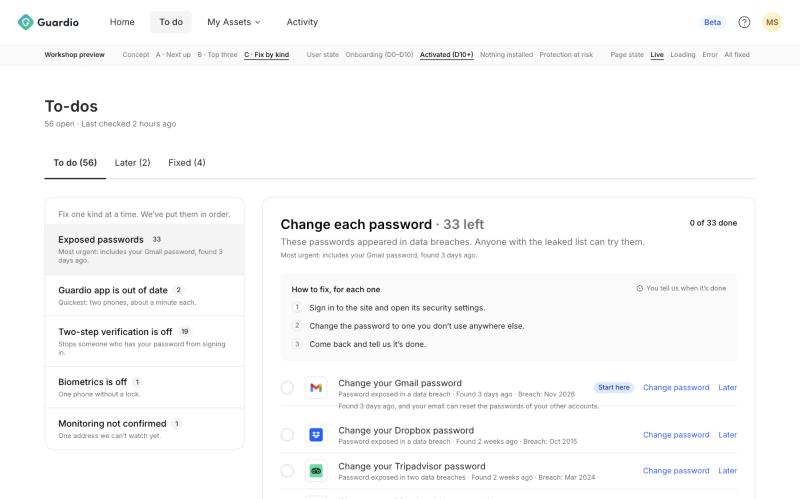
הסוגים בסדר של Guardio, כל אחד עם סיבה: "Most urgent…" , "Quickest…"
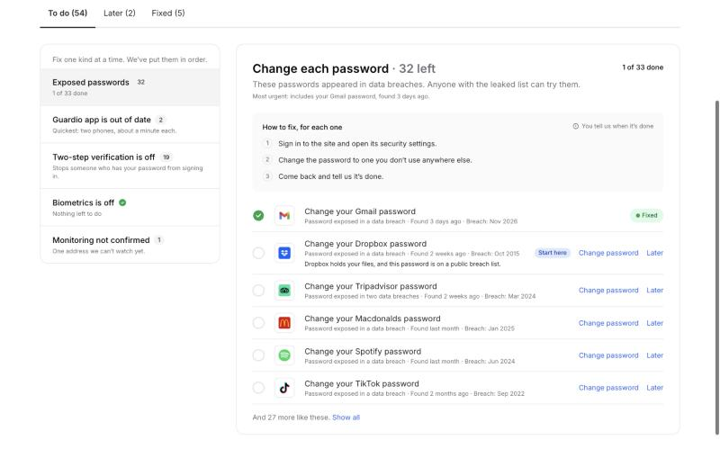
אחרי תיקון: "1 of 33 done" , ו-"Start here" עבר ל-Dropbox
"Start here" והסיבה שלו על הפריט הפתוח הראשון עונים על הסיכון של C: בעיה קריטית שנקברת בתוך קבוצה.
עמודה אחת: סוגי התיקון בסדר של Guardio, כל אחד עם הסיבה שלו ("Most urgent: includes your Gmail password, found 3 days ago", "Quickest: two phones, about a minute each"). ברגע שמתחילים, הסיבה מתחלפת בהתקדמות: "1 of 33 done".
עמודה שנייה: הסוג שנבחר. כותרת עם כמה נשאר, "How to fix, for each one" פעם אחת, ורשימת אתרים לסמן. לכל פריט עיגול done, קישור משלו ו-Later.
המחקר לא מצא אף מוצר שמסביר את הסדר שלו. C מסביר את סדר הקבוצות, כמו ש-B ו-A מסבירים את סדר הפריטים.
הסיבה נעלמת אחרי התיקון הראשון כי היא הזכירה את Gmail, והמשיכה להזכיר אותו גם אחרי שתוקן. צילום המסך הראשון צולם לפני ששורת "למה ראשון" עברה לתוך השורה.
פרק 3 · מצבים · מסגרת אחת לשלושת הקונספטים
אדום מופיע רק ב-At risk. Nothing installed לא אומר אף פעם "all clear" .
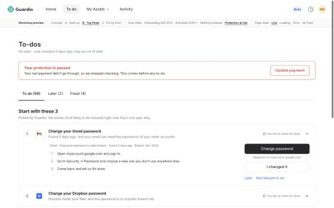
At risk: הודעה אדומה אחת מעל הכול, ו-"may be out of date"
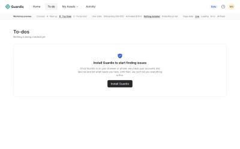
Nothing installed: כל העמוד הופך למצב ריק כן
Onboarding הודעה שה-setup עוד לא הסתיים
טעינה שורות skeleton, בלי מספרים
שגיאה "Your protection is still on. Only this page didn't load."
הכול תוקן "Nothing needs you right now…" , ועדיין קישור לפריטים ב-Later
שלושת הקונספטים חולקים מסגרת אחת: כותרת ועדכניות, הודעות, טאבים, מצבי משתמש, מצבי עמוד, Later ו-Fixed. ההבדל ביניהם הוא רק בטאב To do, כך שההשוואה מראה רק את מה שבאמת שונה.
Nothing installed מחליף את כל העמוד במצב ריק, כי "Nothing to fix" היה שקר כששום דבר לא נבדק.
בשגיאה ובטעינה אין מספרים: הבנייה הראשונה הראתה "56 open" בעמוד השגיאה, מספר שהעמוד לא ידע.
"הכול תוקן" עדיין מקשר לפריטים ב-Later, שעדיין בסיכון. מהמחקר: "all caught up" רגוע לא יכול להפוך להרגעת שווא.
ההודעה של At risk בעמוד הזה היא לא הבאנר של Home: להביא את הבאנר ל-Home בדסקטופ זה תרגיל 2 בסדנה, אז הוא נשאר למשתתפים.
נבדק: 21 צירופים (3 קונספטים כפול 4 מצבי משתמש ו-3 מצבי עמוד) מרונדרים עם הטקסט הצפוי. לכל צירוף יש כתובת משלו, כדי שאפשר יהיה להטמיע אותו במצגת.
פרק 3 · מובייל · 390 · docs/todos-mobile/
במובייל: הבעיה נפתחת ב-sheet, הכרטיס של A הוא המסך, ו-C הופך ל-push.
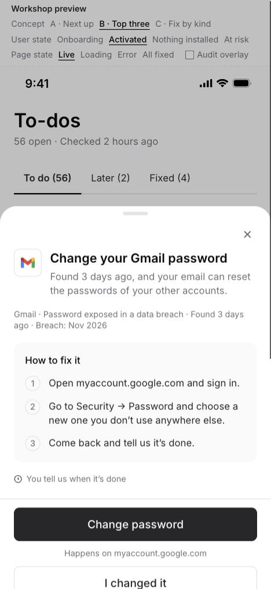
B · ה-sheet
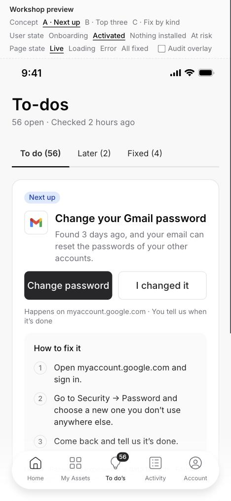
A · Next up
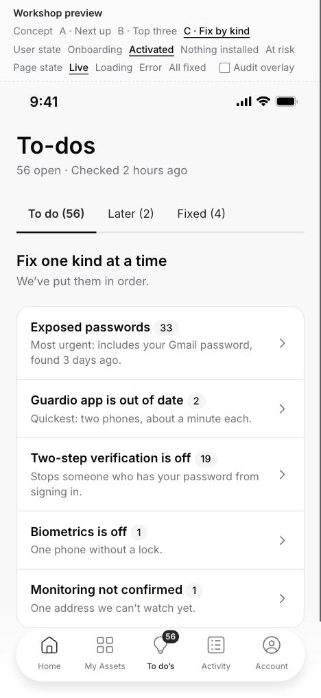
C · סוגי התיקון
שתי שאלות: איפה זה יחיה? ← קבצי HTML ב-docs/. כמה אינטראקטיבי? ← הזרימה הראשית לחיצה.
B ו-C: הבעיה נפתחת ב-sheet, הפעולות מוצמדות למטה.
A: הפעולות עלו מעל הצעדים, כדי שיהיו במסך הראשון.
C: שתי העמודות הופכות ל-push ("‹ All kinds" ).
בלשונית To do's : מספר במקום נקודה אדומה.
דניאל כתב "Start step 8", וענה על שתי שאלות: קבצי HTML ב-docs/ (ההמלצה: אפשר להטמיע אותם במצגת בלי להריץ את האפליקציה), והזרימה הראשית לחיצה (ההמלצה).
שכבה 1 שוב: ה-DESIGN_CONTEXT של ה-web מכסה רק את apps/web, אז ה-skill סרק את apps/mobile וכתב apps/mobile/DESIGN_CONTEXT.md.
החלטות: המחקר הציע segmented control, אבל ה-Tabs של המערכת נעשו בהם שימוש חוזר, כדי לא להוסיף דפוס חדש שלישי. ב-A הפעולות היו מתחת לקו הגלילה בבנייה הראשונה, מאחורי ה-tab bar. ב-B הסיבות קוצרו לשתי שורות, כי שורות של שלוש שורות דחפו את Everything else מהמסך. בלי מדי התקדמות, רק מספרים ("1 of 33 done"). ב-390 אין מקום ל-master–detail, ו-push הוא המוסכמה של iOS.
הנתונים והטוקנים נוצרים על ידי export.mts מתוך packages/, לא מועתקים ביד. הלוגואים הוקטנו רק בעותק: instagram.png שוקל 2 MB ומוצג ב-24 פיקסל; התיקייה ירדה מ-2.3 MB ל-220 KB.
ניגודיות נמדדה: textSecondary על canvas 4.55:1, על לבן 4.83:1, קישורים 5.17:1. הכול עובר AA.
צילום ה-sheet נלקח באמצע האנימציה שלו, ולכן הפעולות נראות חתוכות. מדידה הראתה שה-sheet נכנס.
פרק 3 · Design System Impact · שלושה שלבים
המצאה אחת בכל פלטפורמה. A ו-C נבנו כולם בתוך המערכת.
שלב 6 · קונספט B · web
EXTEND
StatusBadge + fixed / checking / later
INVENT
StepList : צעדים ממוספרים לתיקונים שקורים מחוץ ל-Guardio. לא היה רכיב כזה. מוצע לאימוץ.
שלב 7 · קונספטים A ו-C · web
REUSE
הכול, כולל מה שנוסף בשלב 6.
EXTEND · INVENT
אין. בתוך מערכת העיצוב הקיימת לגמרי.
נשקל ונדחה: progress bar, שהיה INVENT. מספרים אומרים את זה במקומו.
שלב 8 · מובייל · HTML
EXTEND
ה-tab bar: מספר על To do's במקום הנקודה האדומה הקבועה.
INVENT
ה-sheet : grabber, כפתור סגירה, תוכן שגולל, פעולות מוצמדות למטה. מוצע לאימוץ ב-apps/mobile.
בשום שלב לא נוספו טוקנים חדשים, ואין placeholders. כל המצאה סומנה והוצעה חזרה למערכת.
השער רץ על כל אלמנט בכל אחד משלושת השלבים, וכל שלב נגמר בבלוק Design System Impact.
שלב 6: שלוש הרחבות בשפה של המערכת, והמצאה אחת, StepList. היא סומנה כבר ב-spec שדניאל אישר; הרעיון בא מה-playbook של Vanta במחקר: צעדים ממוספרים, קישור, נתיב התפריט המדויק. היא משתמשת רק בטוקנים קיימים (border, text-secondary, label-sm).
שלב 7: כל מה שאושר בשלב 6 נחשב REUSE, ושני הקונספטים נבנו בלי להרחיב או להמציא דבר. progress bar נשקל ונדחה, כי הוא היה המצאה, והמחקר אמר ממילא: מילה או מספר, לא אחוזים.
שלב 8: ה-sheet הומצא למובייל, ודניאל בחר באפשרות שקראה לו בשמו ("open an issue: full screen or sheet"). המספר בלשונית בא מהמחקר: מספר, ואדום רק כשדחוף. segmented control, שהמחקר הציע, לא נבנה: ה-Tabs הקיימים נעשו בהם שימוש חוזר.
ה-sheet והמספר בלשונית קיימים כרגע רק בקונספטים של HTML, לא ב-apps/mobile.
סיכום · מה לא עבד, מתוך הלוגים
לא הכול עבד בפעם הראשונה, והתיעוד אומר את זה.
איפה מה קרה מה נעשה PM ה-spec נשמר ב-repo לפני הסקירה, בניגוד לסדר שה-skill מגדיר, כדי שדניאל יוכל לקרוא את כולו. רק כרטיס ה-Notion חיכה לאישור. ייתכן שצריך לשנות את הסדר ב-skill: טיוטה, סקירה, אישור. מחקר ל-Mobbin אין חבילות אבטחה לצרכן. והחלקים המסוכנים בהשערה (דירוג backlog ארוך, "למה ראשון", הרגע אחרי תיקון חיצוני) לא מופיעים באף רפרנס. נרשמו כפערים בדק, עם החיפושים שאולי יענו עליהם. עיצוב ניסוח שנתפס רק בדפדפן: "All done: biometrics is off" נקרא כאילו הביומטריה כבויה, והסיבה ב-C המשיכה להזכיר את Gmail אחרי שתוקן. תוקן ל-"Nothing left to do here" , והסיבה נעלמת אחרי התיקון הראשון. בדיקה צילומי מסך הטעו: חצים שנראו שבורים בצילום מוקטן, sheet שנראה חתוך כי צולם באמצע אנימציה. מדידה בדף הראתה שהכול תקין. לא נעשה Storybook לא נפתח. ה-sheet והמספר בלשונית קיימים רק ב-HTML. כרטיס ה-To-dos ב-Home עדיין לפי תאריך. הסטוריז עוברים type-check בלבד. השאר נשאר כעבודה נפרדת.
כל שלב בתיעוד נגמר בסעיף "מה לא עבד", ושום דבר לא סודר בדיעבד. בחרתי חמישה.
PM: לפי ה-skill, שומרים את קובץ ה-spec רק אחרי הסקירה. כאן הטיוטה נכתבה קודם כדי שדניאל יוכל לקרוא את ה-PRD המלא. גם: הכרטיס נשאר ב-Shaping אחרי שלב 4, כי ה-skill של המחקר לא נוגע ב-Notion; הוא זז ל-Design רק כשה-spec עודכן אחרי המחקר.
מחקר: הכיסוי של Mobbin מוגבל, והדק אומר את זה בשקף "Who we looked at". החלקים הכי מסוכנים בהשערה הם בדיוק אלה שאף רפרנס לא מראה.
עיצוב: שלוש בעיות ניסוח ופריסה נתפסו בדפדפן ותוקנו, כולל תגית Next up שנמתחה לרוחב כל הכרטיס ב-A.
בדיקה: בצילומים ברוחב 800 החצים נראו שבורים; מדידה בדף הראתה 20×20 תקין, וההקטנה הייתה הסיבה. וגם: הדפדפן המשיך להגיש CSS ישן מהשרת המקומי עד שהקבצים נטענו מחדש בכוח.
לא נעשה: הסטוריז של שלושת הקונספטים עוברים type-check, אבל אף אחד לא הסתכל עליהם ב-Storybook. ה-sheet והמספר בלשונית קיימים רק בקונספטים של HTML. הכרטיס ב-Home עדיין מציג את 3 השורות לפי תאריך, לא לפי עדיפות.
לראות את זה חי
"To do" כבר לא מוביל חזרה ל-Home.
ה-spec: docs/specs/todos-page.md · התהליך המלא, שלב אחר שלב: process/
מה שבנינו: spec מאושר, מחקר עם 15 רפרנסים ופסיקה, שלושה קונספטים שעובדים באפליקציה, ושלושה דפי מובייל. ה-To do בכותרת וה-View To-dos ב-Home מובילים עכשיו לעמוד.
כל קונספט וכל מצב נמצאים בכתובת משלהם, אז אפשר לפתוח כל אחד מהם ישירות. בהשוואות רואים את שלושת הקונספטים חיים.